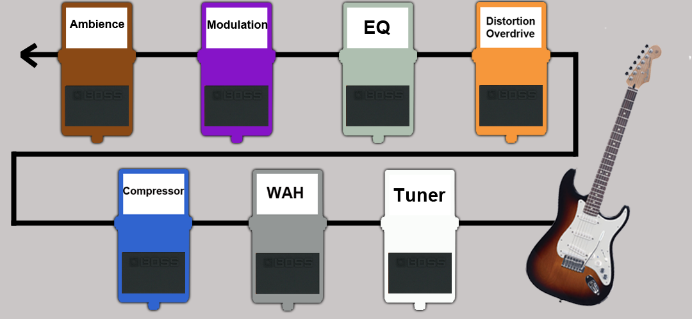
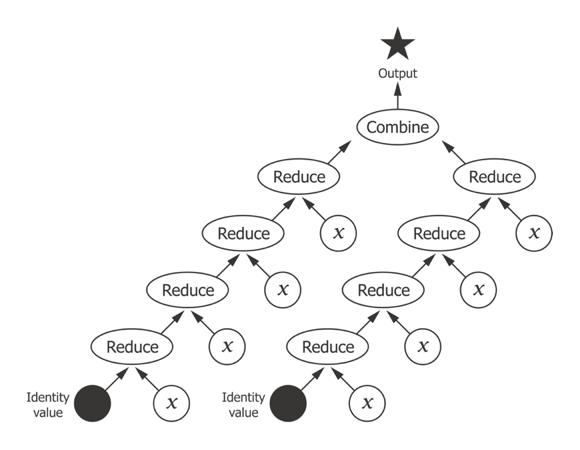
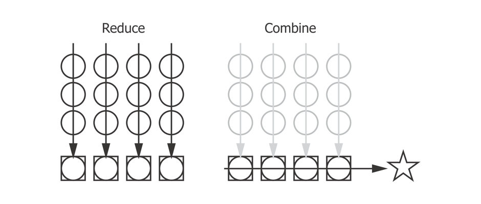

Expressive Parallel Analytics in Clojure
Who am I?
Mission-critical data
Stats
https://www.timeshighereducation.com/news/ranking-methodology-2016
- 13 performance indicators
- 10 quotient indicators
- 4 weighted quotients across 6 subjects
- 800+ institutions
- 7 ranking tables
Analytic pipeline
- load rows
- calculate summary statistics
- process rows w.r.t. summary statistics
- [further processing]
- output
- x 13 x 7
Nope
do_something() do_something_else() then_do_this()
Pipe.line()
PipeLine.doSomething().doSomethingElse().thenDoThis()
(Pipeline :-)
(then-do-this (do-something-else (do-something)))
Threading
(->> (load-data "data.edn") (select-relevant) (convert-currency) (assign-score))
Enter Sequence-processing functions
- map
- filter
- remove
- keep
- take
- partition
Threading II
(->> (load-data "data.edn") (filter relevant?) (map convert-currency) (map assign-score)) ;;({:name "A", :fx 0.8, :a 112.5, :b 62.5, :score 175.0} ;; {:name "B", :fx 0.2, :a 400.0, :b 400.0, :score 800.0} ;; {:name "D", :fx 0.5, :a 100.0, :b 140.0, :score 240.0})
Solved?
(defn process [data] (->> (filter relevant? data) (map convert-currency) (map assign-score))) (process (load-data "data.edn")) ;;({:name "A", :fx 0.8, :a 112.5, :b 62.5, :score 175.0} ;; {:name "B", :fx 0.2, :a 400.0, :b 400.0, :score 800.0} ;; {:name "D", :fx 0.5, :a 100.0, :b 140.0, :score 240.0})
…Not really
(def v [1 2 3 4]) ;; #'user/v (type v) ;; clojure.lang.PersistentVector (type (map inc v)) ;; clojure.lang.LazySeq (type (mapv inc v)) ;; clojure.lang.PersistentVector
Enter Transducers

No Seq in Sight
(def xform (comp (filter relevant?) (map convert-currency) (map assign-score)))
Add the sequence
(sequence xform (load-data "data.edn")) ;;({:name "A", :fx 0.8, :a 112.5, :b 62.5, :score 175.0} ;; {:name "B", :fx 0.2, :a 400.0, :b 400.0, :score 800.0} ;; {:name "D", :fx 0.5, :a 100.0, :b 140.0, :score 240.0})
It is an open system
(->> (load-data "data.edn") (sequence (comp xform (take 2)))) ;;({:name "A", :fx 0.8, :a 112.5, :b 62.5, :score 175.0} ;; {:name "B", :fx 0.2, :a 400.0, :b 400.0, :score 800.0}) (->> (load-data "data.edn") (sequence (comp xform (map :score)))) ;; (175.0 800.0 240.0)
Sum up a sequence
(->> (load-data "data.edn") (sequence (comp xform (map :score))) (reduce +)) ;; 1215.0
Transduce
(->> (load-data "data.edn") (transduce (comp xform (map :score)) +)) ;; 1215.0
Reducing step function
(+) ;; 0 (+ 42) ;; 42 (+ 21 21) ;; 42
(conj) ;; [] (conj [42]) ;; [42] (conj [21] 21) ;; [21 21]
An IQR step function
https://github.com/HdrHistogram/HdrHistogram
(defn hist-iqr ;; Zero arity init ([] (DoubleHistogram. 1e8 3)) ;; Two arity step ([hist x] (doto hist (.recordValue x))) ;; Single arity complete ([hist] (vector (.getValueAtPercentile hist 25) (.getValueAtPercentile hist 75))))
Using the custom step
(->> (load-data "data.edn") (transduce (comp xform (map :score)) hist-iqr)) ;; [175.0 240.0]
Sequential processing
(defn iqr-sequence [xform data] (let [[from to] (->> data (transduce (comp xform (map :score)) hist-iqr))] (->> data (sequence (comp xform (filter #(<= from (:score %) to)))))))
Mean step function
(defn mean-step ([] {:sum 0 :count 0}) ([accum x] (-> (update-in accum [:count] inc) (update-in [:sum] + x))) ([{:keys [sum count]}] (/ sum count))) (->> (load-data "data.edn") (transduce (comp xform (map :score)) mean-step)) ;; 405.0
Mean of the IQR
(defn iqr-mean [xform data] (let [[from to] (->> data (transduce (comp xform (map :score)) hist-iqr))] (->> data (transduce (comp xform (filter #(<= from (:score %) to)) (map :score)) mean-step)))) ;; 207.5
Enter Reducers
- Pre-date transducers
- Also aim to reduce number of intermediate collections
- Bring parallelism through Java's fork/join
Fork / Join
solve(problem):
if problem is small enough:
solve problem directly (sequential algorithm)
else:
for part in subdivide(problem)
fork subtask to solve part
join all subtasks spawned in previous loop
combine results from subtasks
Parallel reduce / combine

…schematically

Mean reducers
(require ['clojure.core.reducers :as r]) (defn mean-step ([] {:sum 0 :count 0}) ([accum x] (-> (update-in accum [:count] inc) (update-in [:sum] + x))) ([{:keys [sum count]}] (/ sum count))) (defn mean-combiner ;; Combiner is used for init value ([] {:sum 0 :count 0}) ([a b] (merge-with + a b))) (->> (load-data "data.edn") (into [] (comp xform (map :score))) (r/fold mean-combiner mean-step)) ;; {:sum 1215.0, :count 3}
Intermediate collections revisited
(def scorer (comp xform (map :score))) (->> (load-data "data.edn") (into [] scorer) (r/fold mean-combiner mean-step)) ;; {:sum 1215.0, :count 3} (->> (load-data "data.edn") (r/fold mean-combiner (scorer mean-step))) ;; {:sum 1215.0, :count 3}
Anatomy of a transducer
(defn filter' [pred] (fn [rf] (fn ([] (rf)) ([result] (rf result)) ([result input] (if (pred input) (rf result input) result))))) (transduce (filter' even?) conj [1 2 3 4 5 6]) ;; [2 4 6]
Enter Tesser
https://github.com/aphyr/tesser
(:require [tesser.core :as t] [tesser.math :as m]) (def mean-fold (->> (t/filter relevant?) (t/map convert-currency) (t/map assign-score) (t/map :score) (m/mean))) (-> (t/chunk 1024 (load-data "data.edn")) (t/tesser mean-fold)) ;; 405.0
Mean recipe
{:reducer-identity (constantly [0 0]) :reducer (fn reducer [[s c] x] [(+ s x) (inc c)]) :post-reducer identity :combiner-identity (constantly [0 0]) :combiner (fn combiner [x y] (core/map + x y)) :post-combiner (fn post-combiner [x] (double (/ (first x) (core/max 1 (last x)))
Defining our own fold
(def iqr-transform {:reducer-identity (fn [] (DoubleHistogram. 1e8 3)) :reducer (fn [hist x] (doto hist (.recordValue x))) :post-reducer identity :combiner-identity (fn [] (DoubleHistogram. 1e8 3)) :combiner (fn [a b] (doto a (.add b))) :post-combiner (fn [hist] (vector (.getValueAtPercentile hist 25) (.getValueAtPercentile hist 75)))}) (def iqr-fold (->> (t/filter relevant?) (t/map convert-currency) (t/map assign-score) (t/map :score) (t/fold iqr-transform))) (-> (t/chunk 1024 (load-data "data.edn")) (t/tesser iqr-fold)) ;; [175.0 240.0]
Mathematical helpers
- mean
- variance
- standard-deviation
- covariance
- correlation
- covariance-matrix
- correlation-matrix
- digest (histogram, cardinality estimation)
Calculating variance
{:reducer-identity (constantly [0 0 0]) :reducer (fn count-mean-sq [[count mean sum-of-squares] x] (let [count' (inc count) mean' (+ mean (/ (- x mean) count'))] [count' mean' (+ sum-of-squares (* (- x mean') (- x mean)))])) :post-reducer identity :combiner-identity (constantly [0 0 0]) :combiner (fn partcmsq [[c m sq] [c2 m2 sq2]] (let [count (+ c c2)] (if (zero? count) [c m sq] [count (/ (+ (* c m) (* c2 m2)) count) (+ sq sq2 (/ (* (- m2 m) (- m2 m) c c2) count))]))) :post-combiner (fn vardiv [x] (double (/ (last x) (core/max 1 (dec (first x))))))}
Other combinators
(def multi-iqr-fold (->> (t/filter relevant?) (t/map convert-currency) ;; Facet runs fold on all keys in a map (t/map #(select-keys % [:measure-a :measure-b])) (t/facet) (t/fold iqr-transform))) (-> (t/chunk 1024 (load-data "data.edn")) (t/tesser multi-iqr-fold)) ;; {:measure-a [100.0 112.5] :measure-b [62.5 140.09375]}
Other combinators
(def fused-fold (->> (t/filter relevant?) (t/map convert-currency) (t/map assign-score) ;; Fuse runs different named folds (t/fuse {:count (t/count) :iqr (->> (t/map :score) (t/fold iqr-transform))}))) (-> (t/chunk 1024 (load-data "data.edn")) (t/tesser fused-fold)) ;; {:count 3, :iqr [175.0 240.0]}
Simple Regression
(defn calculate-coefficients [{:keys [covariance variance-x mean-x mean-y]}] (let [slope (/ covariance variance-x)] {:intercept (- mean-y (* mean-x slope)) :slope slope})) (defn linear-regression [fx fy fold] (->> fold (t/fuse {:covariance (m/covariance fx fy) :variance-x (m/variance (t/map fx)) :mean-x (m/mean (t/map fx)) :mean-y (m/mean (t/map fx))}) (t/post-combine calculate-coefficients))) (def linear-regression-fold (->> (t/filter relevant?) (t/map convert-currency) (linear-regression :measure-a :measure-a))) (-> (t/chunk 1024 (load-data "data.edn")) (t/tesser linear-regression-fold)) ;; {:intercept 68.05555555555557, :slope 0.6666666666666666}
Yes, it is web scale
(:require [tesser.hadoop :as h] [parkour.io.text :as text] [parkour.tool :as tool]) (:gen-class) (defn linear-regression-dfold [fx fy] (->> (t/map read-string) (t/filter relevant?) (t/map convert-currency) (linear-regression fx fy))) (defn tool [conf input-file work-dir] (let [dseq (text/dseq input-file)] (h/fold conf dseq work-dir #'linear-regression-dfold :measure-a :measure-b))) (defn -main [& args] (System/exit (tool/run tool args)))
Summary
- Separate process from substrate
- Transducers, step functions and transducible processes
- Reducing and combining functions
- Create composable, extensible units of computation
- Defer decisions about context
- Benefit
Thanks!
https://github.com/henrygarner/data-science-london-oct-2015

Henry Garner
@henrygarner
If you liked this…
http://cljds.com/cljds-book | http://cljds.com/cljds-amzn